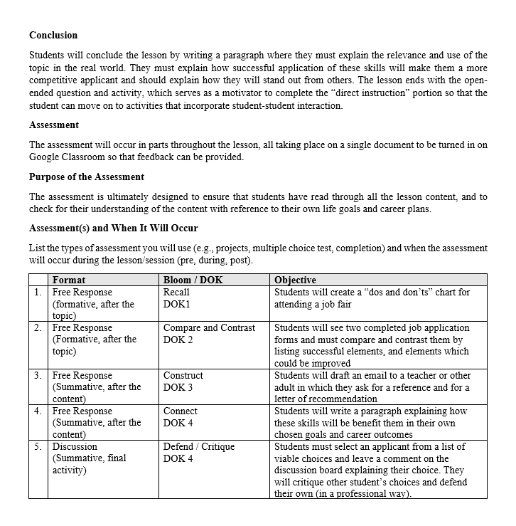

After developing, piloting, and evaluating the KASH soft skills program at Morgan County Charter School System, I still felt that the lessons could use more content and material to fully fill the allotted time that was being made available for students. I also noticed that the soft skills program was, while hosted entirely in google sites and google classroom, still created with the intent to be delivered by a teacher. This made it less effective when students were asked to access it remotely as a result of COVID. I decided to explore yet another expansion to the program, which I am calling “KASH +” as a proof of concept for my own professional development.
I knew a lot about the audience and context for these lessons having been a teacher at the school previously. It is because of this experience that I wanted to further expand the curriculum to make it increase efficacy and rigor. I completed a design document to explore the specific lessons that would be covered, to select a single module to fully develop, and to indicate learning objectives and learner assessments. With learning objectives and assessments created, it was a simple task to add more content to the chosen lesson module which aligned with the outcomes. I was particular to make sure that my assessment, which was the activity that students complete individually, walked them from lower to higher DOK (depth of knowledge) tasks. This helps to ensure that the sequence and scaffolding of the worksheet can flow more smoothly from the learner’s experience. I continue to use a google site to host the information since that would be the best solution for the school this project originated from. An original version of my site was tested with users to get feedback which informed revisions to the navigation, layout, and presentation of content. These revisions enhanced the user experience to be more self-explanatory and easier to follow. Once the site was developed, a Google Classroom sandbox was created, complete with test students, to simulate the environment that would be encountered by students. This Google Classroom holds the student worksheet (the assessment tool) and provides opportunities for students to interact with each other through discussion activities. This platform also hosts the communications and announcements from instructors.




This process gave me a greater appreciation for the value of feedback from test users peers. The revisions made to the site based on their feedback only improved the user experience. It also gave me an opportunity to revisit the designs and content that I had created as an initial foray into instructional design. Reviewing old work with a more refined eye showed me how my content writing had improved and gave me insights into my strengths with curriculum mapping, learning objective writing, and assessment development.